1Tu rol y tus módulos
Como Jefe de Almacén eres responsable de las salidas de tu sucursal. Al iniciar sesión entras directo al Gestor de Casos. En el menú superior tienes:
| Módulo | Para qué lo usas |
|---|---|
| Escáner | El mismo que usan los auxiliares para registrar salidas. Puedes hacer salidas tú mismo (ver el Manual del Auxiliar). |
| Etiquetas | Imprimir etiquetas QR de placas desde el stock o desde una recepción (IR). |
| Casos | Ver los errores de surtido de tu almacén, justificarlos en casos y dar seguimiento a su aprobación. |
| 🔒 PIN | Configurar o cambiar tu PIN de autorización. |
Responsabilidades clave:
- Autorizar con tu PIN las salidas con diferencias cuando sea correcto hacerlo.
- Firmar las salidas de más de 3 placas.
- Justificar cada error de surtido de tu almacén antes de que el líder lo revise.
2Tu PIN de autorización
El PIN es una clave numérica personal de 4 a 6 dígitos. Lo usas cuando un auxiliar de tu sucursal encuentra diferencias en la confronta y toca Solicitar autorización: tú escribes el PIN en su celular y la salida continúa. Cada uso queda registrado con tu nombre.
2.1 Configurar o cambiar el PIN
- Toca el botón 🔒 PIN del encabezado.
- Escribe tu contraseña actual del WMS (confirma que eres tú).
- Escribe el nuevo PIN (solo números, 4 a 6) y repítelo en Confirmar PIN.
- Toca Guardar PIN. Verás “✓ PIN configurado correctamente”.
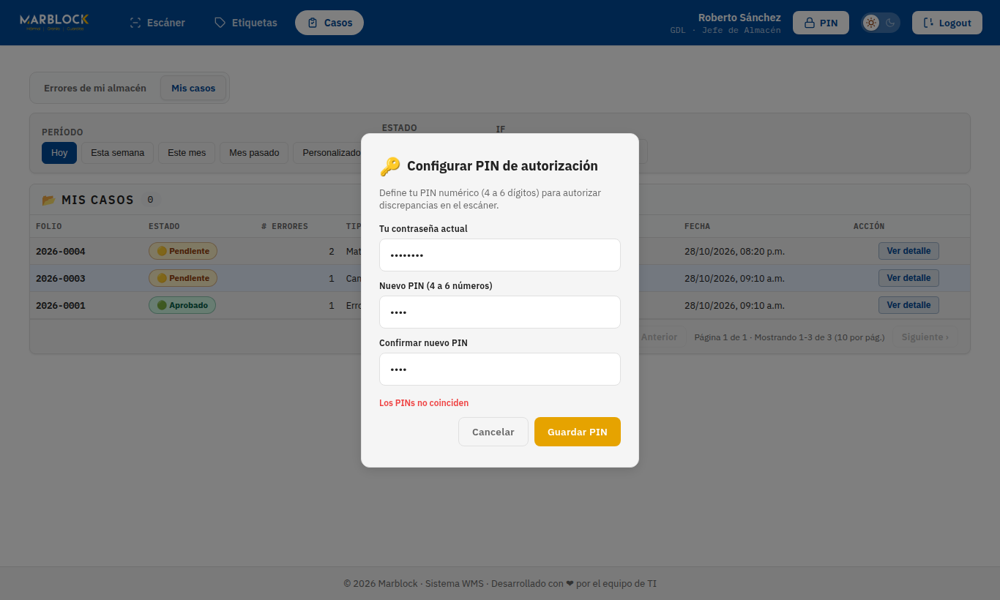
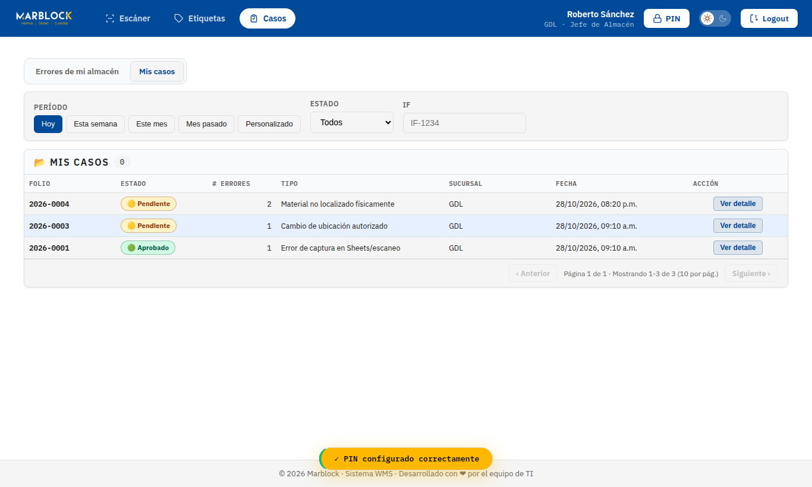
3Gestor de Casos: errores de mi almacén
Cada vez que una salida se completa con diferencias (autorizadas con PIN) o una IF se cancela en NetSuite después de surtirse, se genera un error de surtido. La pestaña Errores de mi almacén muestra los errores sin caso: los que todavía no justificas.
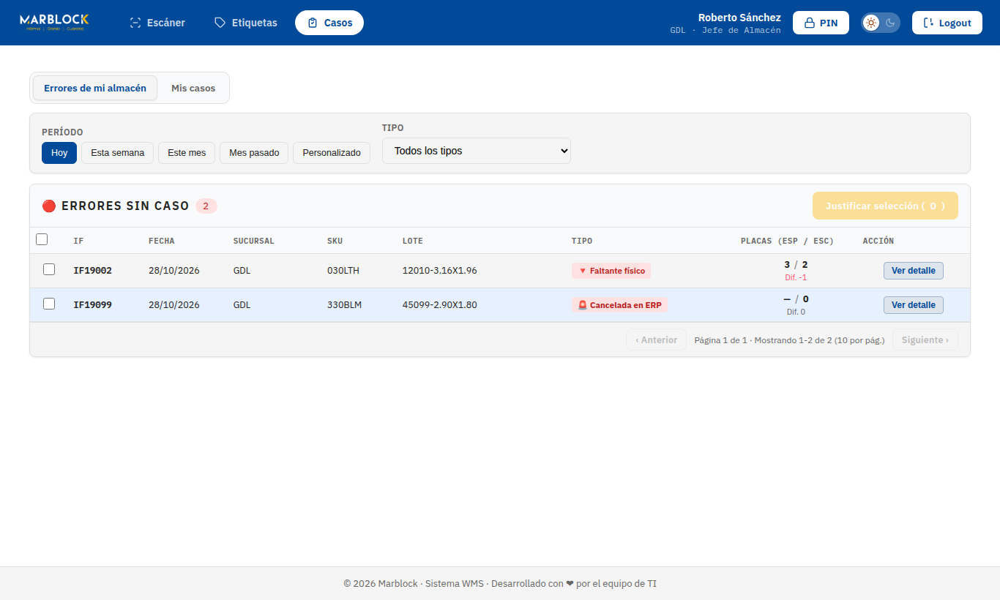
3.1 Filtros
- Período: Hoy, Esta semana, Este mes, Mes pasado o Personalizado (elige fechas desde/hasta).
- Tipo: muestra solo un tipo de error (ver glosario).
3.2 Columnas
IF, fecha, sucursal, SKU, lote, tipo de error y Placas (esp / esc): cuántas pedía la IF contra cuántas se escanearon, con la diferencia (ej. Dif. -1 = faltó una placa).
3.3 Ver detalle
Ver detalle abre la auditoría del error: quién surtió, quién autorizó con PIN, las placas esperadas y escaneadas y el historial.
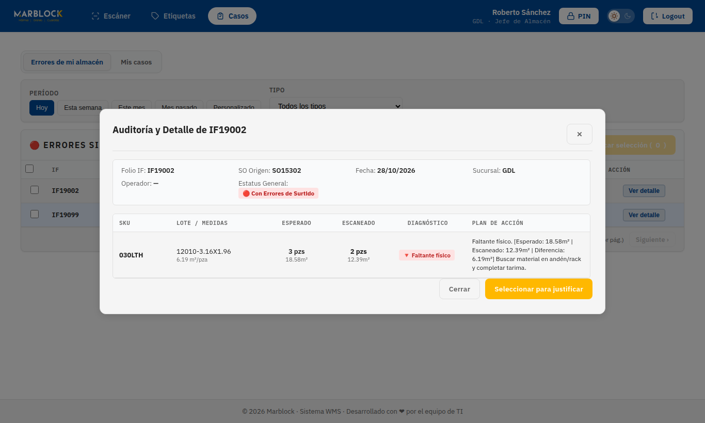
4Justificar errores (crear un caso)
Un caso agrupa uno o varios errores con una misma explicación. El líder lo revisa y lo aprueba o rechaza.
- Marca la casilla de cada error que tenga la misma causa. El botón cambia a Justificar selección (N).
- Toca Justificar selección.
- Elige el Tipo de justificación.
- Escribe la justificación: qué pasó, por qué y qué se hizo. Sé concreto (folios, personas, fechas).
- Toca Crear caso. Verás “Caso CASO-… creado y enviado a revisión”. Los errores salen de la lista de pendientes.
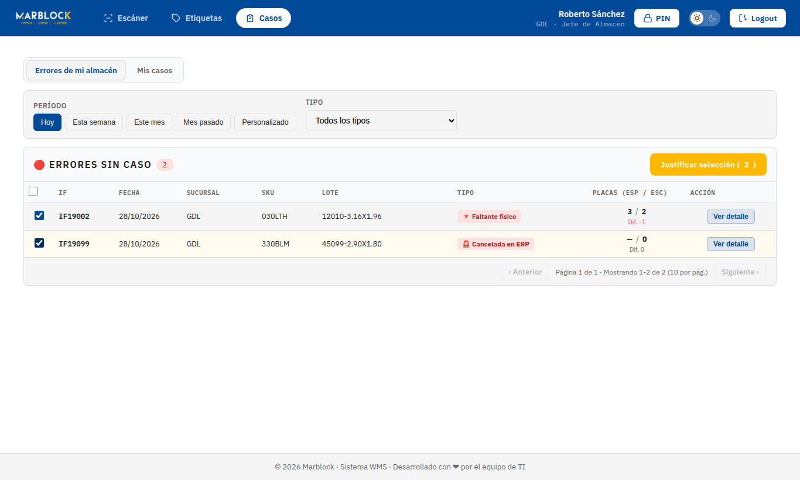
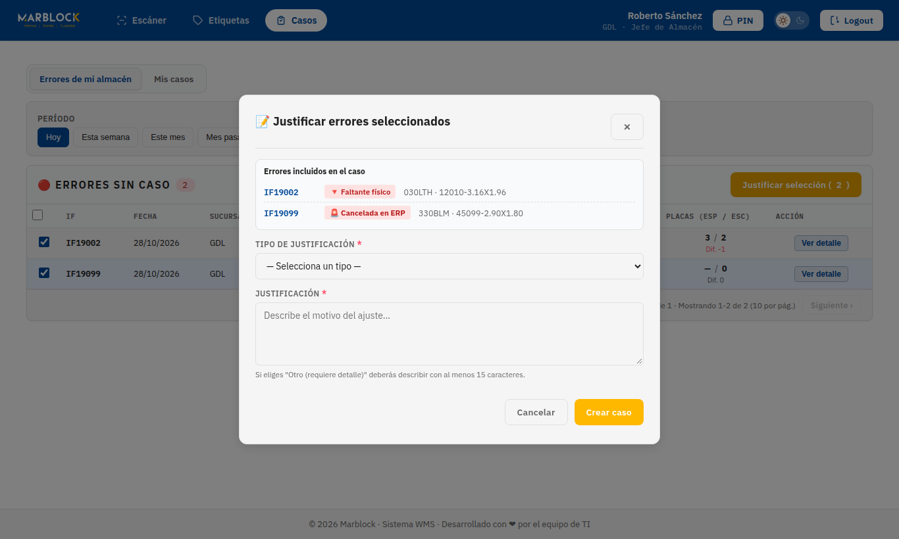
4.1 Tipos de justificación
| Tipo | Cuándo usarlo |
|---|---|
| Error de captura en Sheets/escaneo | Se escaneó mal o se capturó mal el dato, pero el material salió correcto. |
| IF cancelada o reabierta en NetSuite | La IF cambió en el ERP después de surtirse (típico de “Cancelada en ERP”). |
| Material no localizado físicamente | La placa no se encontró en almacén (faltante real). |
| Cambio de ubicación autorizado | El material salió de otra ubicación con autorización. |
| Falla de escáner/red/sistema | La pistola, la red o el sistema fallaron durante el surtido. |
| Ajuste de inventario en curso | Hay un ajuste pendiente que explica la diferencia. |
| Otro | Ninguno de los anteriores. Requiere mínimo 15 caracteres de explicación. |
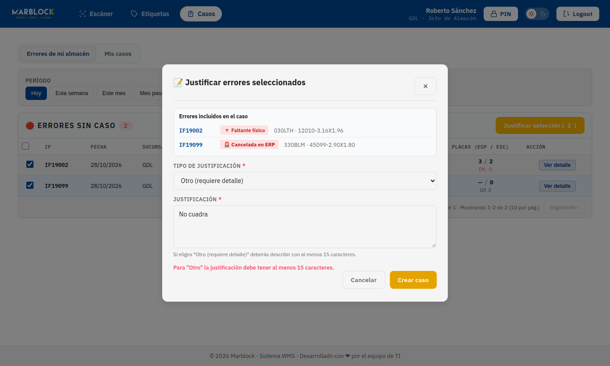
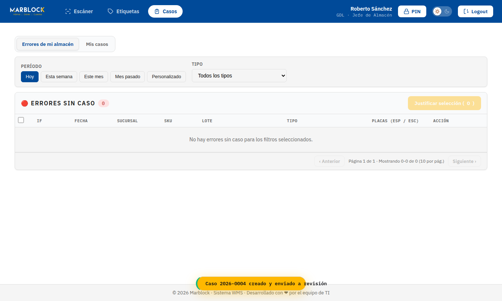
5Mis casos: seguimiento, rechazos y reenvío
La pestaña Mis casos lista los casos que creaste con su folio, número de errores y estado:
| Estado del caso | Significa |
|---|---|
| Esperando que el líder lo revise. | |
| Aprobado | El líder aceptó la justificación. Sus errores quedan como Justificados. |
| Rechazado | El líder no aceptó la justificación. Lee su comentario y corrige. |
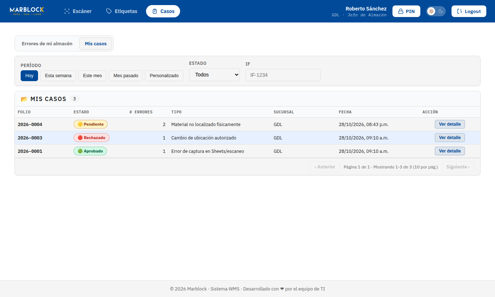
5.1 Caso rechazado
Abre el caso para ver el comentario del líder. Tienes dos acciones:
- Editar y reenviar: cambia el tipo y/o la justificación y vuelve a enviarlo a revisión (“Caso reenviado a revisión”).
- Retirar errores: selecciona errores que no corresponden al caso y sácalos; vuelven a Errores de mi almacén como abiertos para justificarlos en otro caso. Pide confirmación: “¿Retirar N error(es) del caso? Volverán a estado abierto.”
También puedes escribir un comentario en el caso para responder al líder.
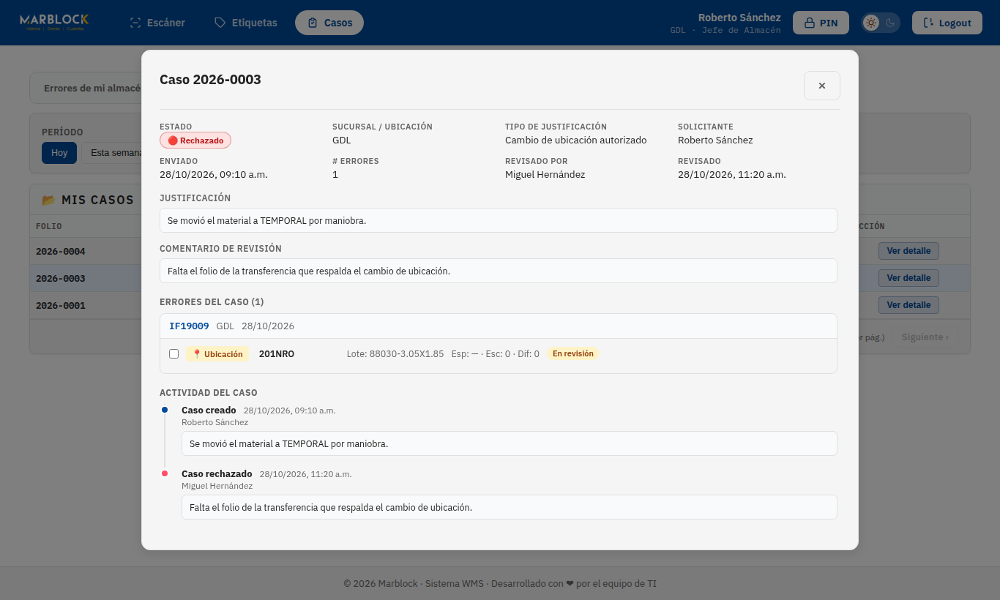
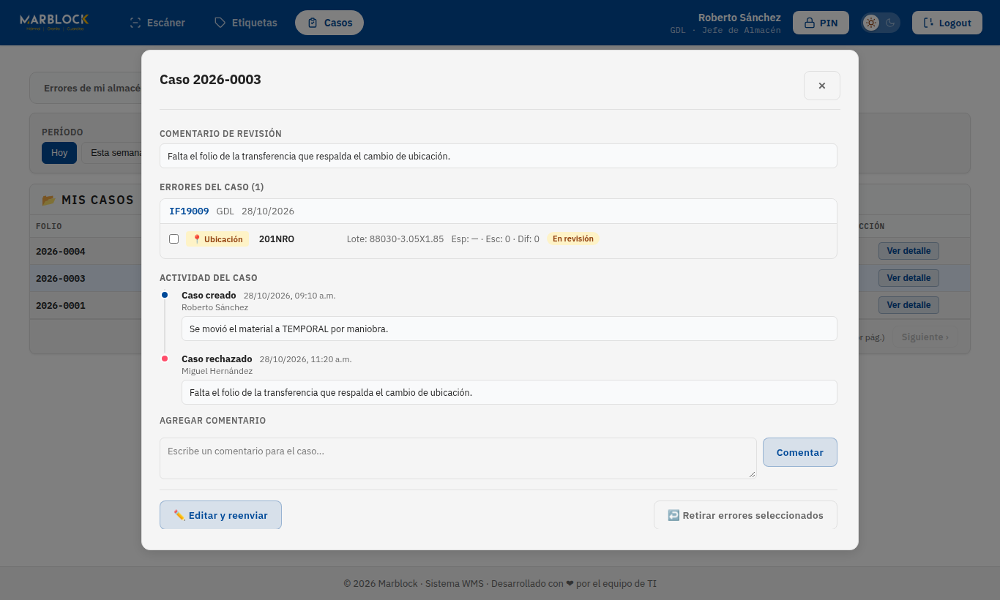
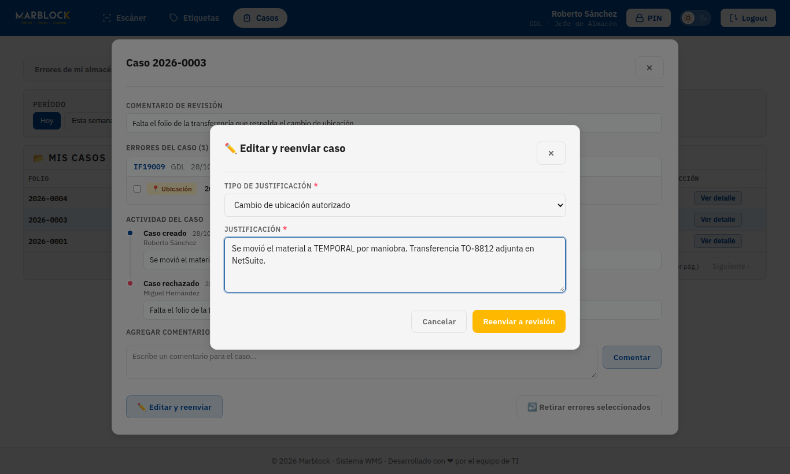
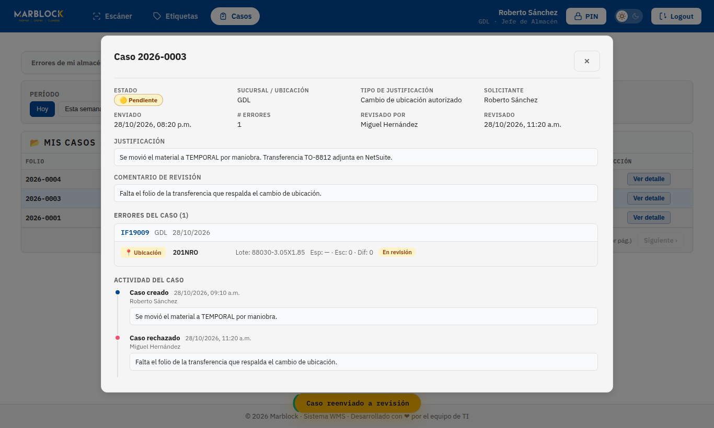
6Etiquetas: imprimir en la Zebra
Desde Etiquetas imprimes las etiquetas QR que después escanean los auxiliares. Hay dos orígenes: Stock (placas que ya están en almacén) y Recepción IR (placas que acaban de llegar).
6.1 Desde Stock
- Escribe un SKU, lote o descripción en el buscador, elige ubicación si quieres y toca Buscar.
- Toca + Agregar en cada placa. Aparece en Etiquetas seleccionadas (derecha).
- El sistema consulta el pedimento de cada placa: si hay uno, lo toma; si hay varios, elige el correcto en Selecciona pedimento; si no hay, se marca Sin pedimento.
- Ajusta cuántas etiquetas quieres por placa y revisa el Total a imprimir.
- Toca Imprimir a Zebra.
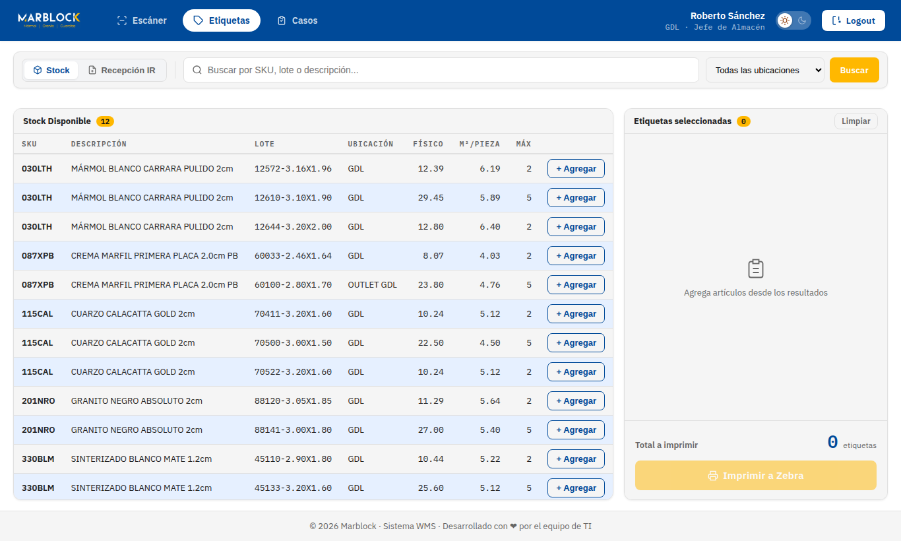
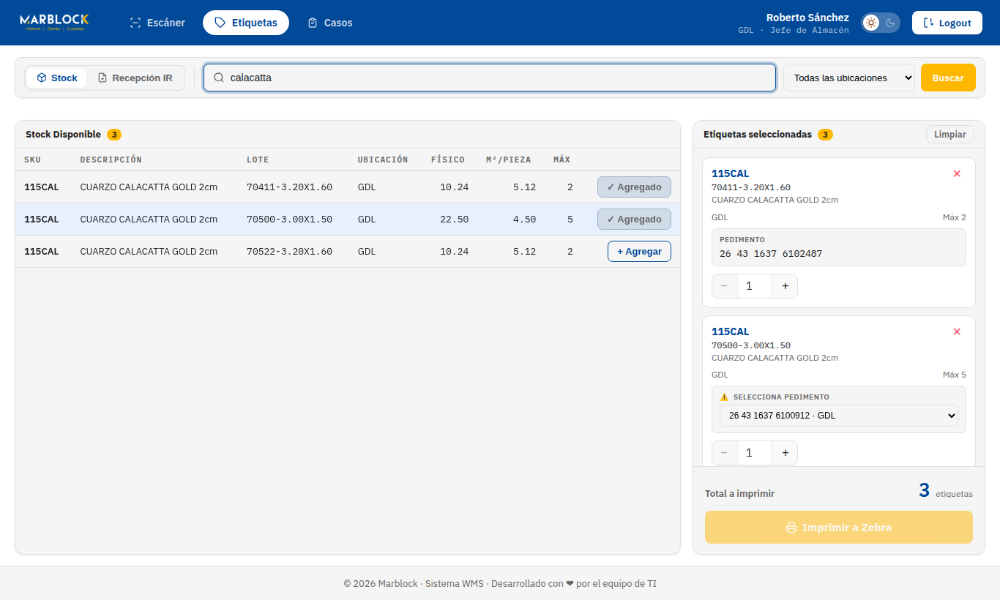
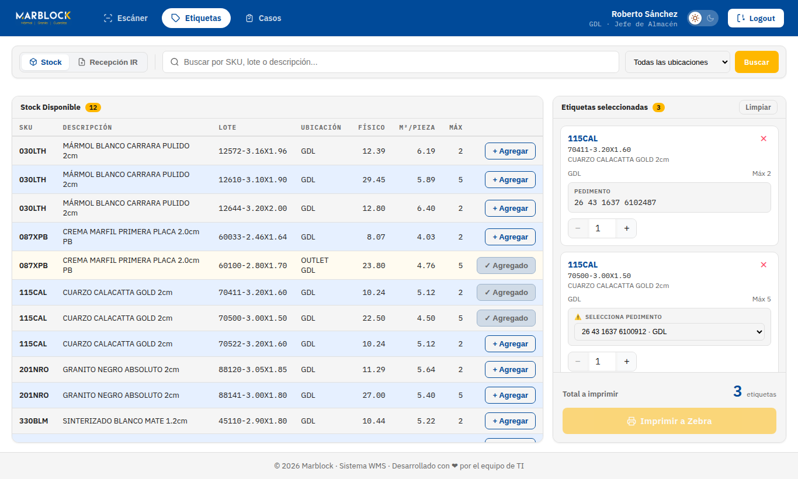
6.2 Desde Recepción IR
- Cambia a la pestaña Recepción IR. Busca por folio IR, embarque o pedimento.
- Toca Ver / Imprimir en la recepción.
- Marca las líneas a etiquetar y ajusta cantidades.
- Toca Cargar al Carrito y después Imprimir N etiquetas / Imprimir a Zebra.
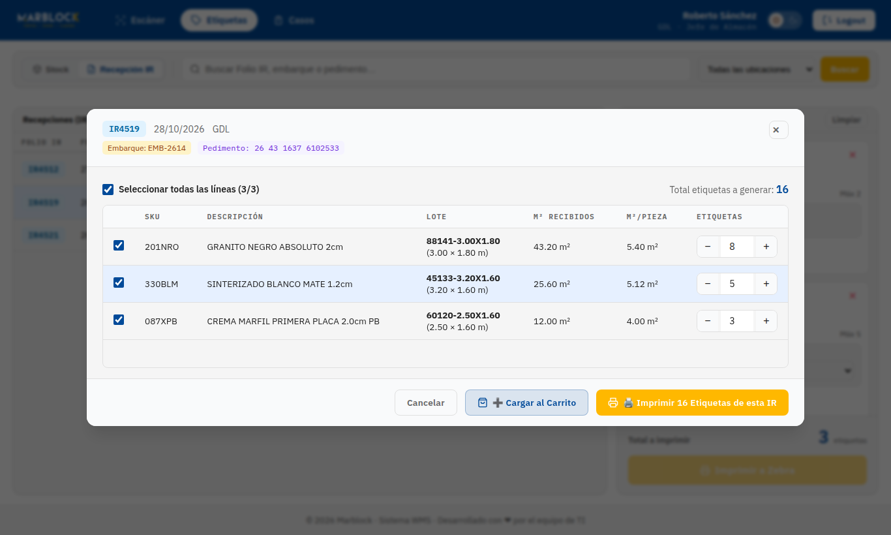
6.3 Conectar la impresora Zebra
- Conecta la Zebra por USB a la computadora y enciéndela.
- Usa Chrome o Edge con la dirección segura (https).
- Al tocar Imprimir aparece “Solicitando acceso al puerto USB…” y la ventana del navegador: elige la Zebra y toca Conectar.
Firefox o sin https: el navegador no permite USB; se descarga un archivo
etiquetas.zpl para enviarlo a la impresora por otro medio.Windows no ve la impresora: hay que instalar una sola vez el controlador WinUSB con Zadig (pídelo a sistemas).
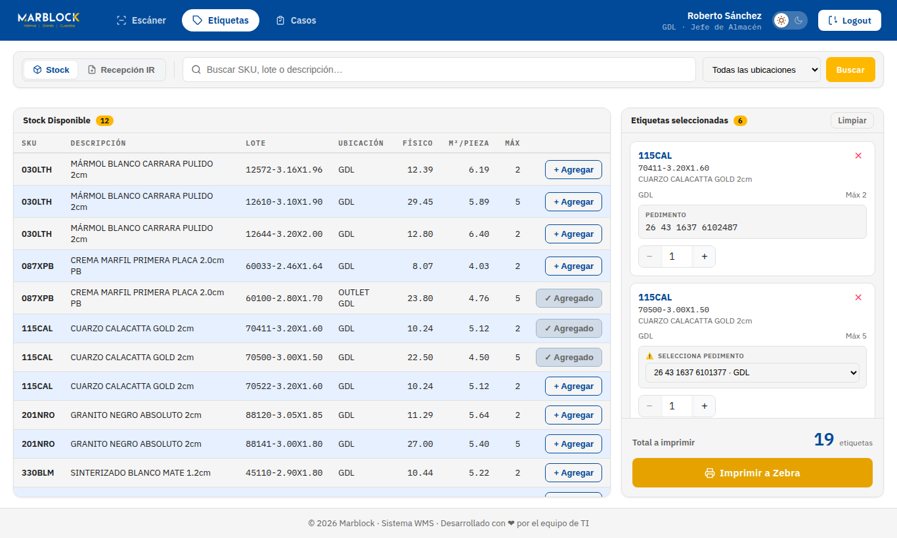
7El Escáner y tus firmas
El Escáner funciona igual que para el auxiliar (incluido el modo Multi-IF); consulta el Manual del Auxiliar de Almacén para el paso a paso.
| Situación | Lo que se espera de ti |
|---|---|
| Salida de 4 o más placas | Firmar como Jefe de Almacén (y el gerente firma a partir de 11). |
| Multi-IF | Las firmas son una sola ronda; el número se calcula con el total del grupo. Tu PIN autoriza una IF a la vez. |
| Diferencias en confronta | Revisar físicamente antes de autorizar. Si autorizas, el error aparecerá en tus Casos. |
| Envío fallido en Multi-IF | Que el auxiliar use Reintentar en el resumen; si persiste, reporta a sistemas con el folio de la IF. |
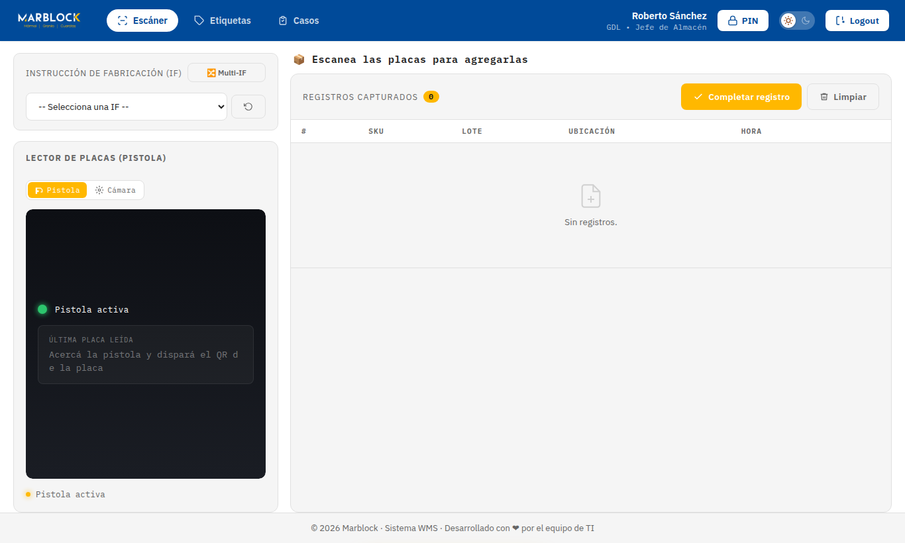
8Mensajes y errores
| Mensaje | Significa / qué hacer |
|---|---|
| Ingresa tu contraseña actual | Falta la contraseña al configurar el PIN. |
| El PIN debe ser numérico de 4 a 6 dígitos | El PIN tiene letras o longitud incorrecta. |
| Los PINs no coinciden | PIN y confirmación distintos. |
| Sesión expirada: cierra sesión y vuelve a entrar | Tu sesión venció o la contraseña es incorrecta. Sal y vuelve a entrar. |
| Error de conexión al configurar el PIN | Sin internet; reintenta. |
| Selecciona al menos un error. | Marca errores antes de justificar. |
| Selecciona un tipo de justificación. | Elige el tipo. |
| La justificación es obligatoria. | Escribe la explicación. |
| Para “Otro” la justificación debe tener al menos 15 caracteres. | Amplía la explicación. |
| Selecciona al menos un error para retirar | Marca errores del caso antes de “Retirar errores”. |
| Escribe un comentario antes de enviarlo | Comentario vacío. |
| Error cargando tipos de justificación / sucursales | Problema de conexión; recarga la página. |
| Error al consultar pedimento | No se pudo consultar NetSuite para esa placa; quítala y agrégala de nuevo. |
| No se seleccionó ninguna impresora | Repite Imprimir y elige la Zebra. |
9Glosario de tipos de error
- 🔻 Faltante físico
- Se escanearon menos placas de un lote de las que pedía la IF.
- 📦 Placas de más
- Se escanearon más placas de un lote de las que pedía la IF.
- 📋 Línea omitida
- Una línea de la IF no tuvo ninguna placa escaneada.
- 🔄 Huérfana pura
- Se escaneó un SKU/lote que no está en la IF.
- 🔀 Lote cruzado
- Mismo SKU, pero de un lote distinto al pedido.
- 🖨️ Media placa (etiquetado)
- La IF pedía fracción de placa y se escaneó la etiqueta de placa completa.
- 📍 Ubicación
- La placa salió de una ubicación distinta a la de la IF.
- 🚨 Cancelada en ERP
- La IF se surtió pero después se canceló o desapareció en NetSuite (posible fuga).
- Estados del error
- Abierta (sin caso) → En revisión (en un caso pendiente) → Justificada (caso aprobado).